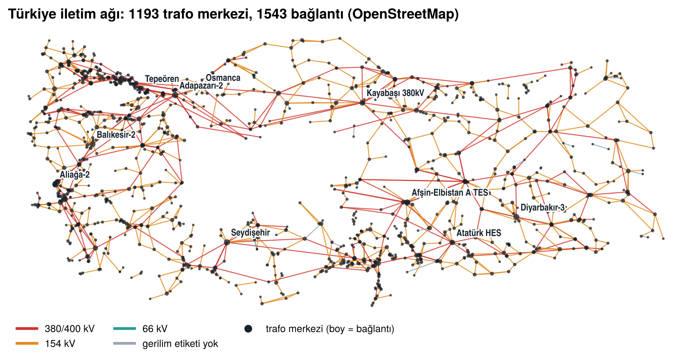
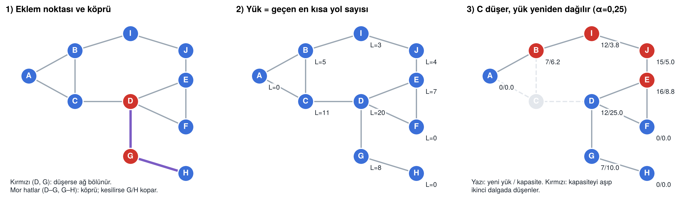
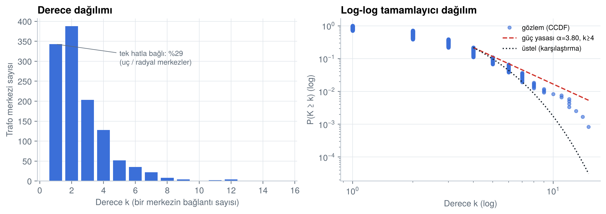
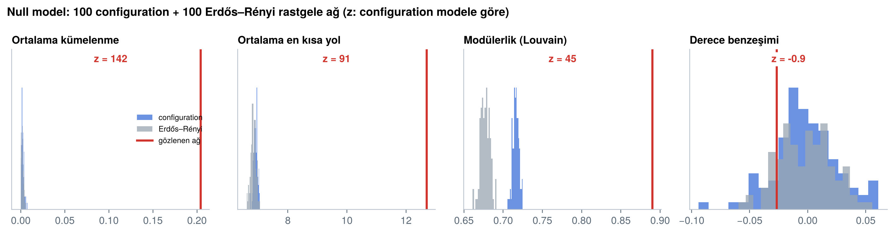
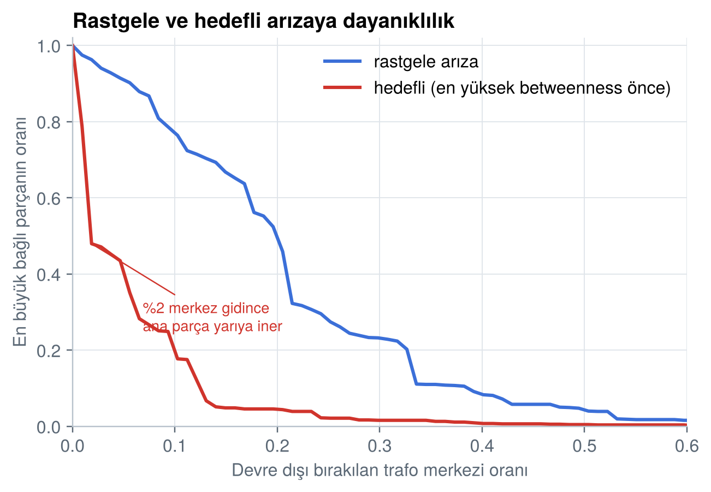

Türkiye Elektrik İletim Altyapısında Tek Hata Noktaları ve Zincirleme Arıza
Said Özen · 2516016014 Büyük Veri Analistliği, 2. sınıf Manisa Celal Bayar Üniversitesi, Manisa Teknik Bilimler MYO
Sosyal Ağ Analizi dönem ödevi Öğr. Gör. Osman Can Çetlenbik 2026–2027 Güz · Teslim: 30 Ekim 2026
Soru. Türkiye iletim şebekesinde hangi trafo merkezleri tek hata noktasıdır ve basit bir zincirleme arıza nasıl yayılır?
Veri. OpenStreetMap'ten 4.243 trafo merkezi ve 4.698 iletim hattı indirildi; bunlardan 1.193 trafo merkezli, 1.543 bağlantılı bir ağ kuruldu (en büyük bağlı parça 1.072 merkez).
Cevap. Merkezlerin %30'u (326) eklem noktasıdır ama yalnızca 14'ü 10 veya daha fazla merkezi koparır; bunlar Çukurova, Trakya, Batı Karadeniz ve Antalya'daki radyal uçları besleyen merkezlerdir. Zincirleme arıza ise başka merkezlerden başlar: Marmara'yı Anadolu'ya bağlayan Osmanca–Kurşunlu–Kayabaşı 380 kV koridorundaki merkezlerden biri düştüğünde, yük yeniden dağıtım modelinde (%25 yedek kapasite) şebekenin ayakta kalan en büyük parçası ortalama %32'ye iner; rastgele bir merkezin kaybında bu oran %97'dir.
1Giriş ve araştırma sorusu
Elektrik iletim şebekesi, santrallerde üretilen enerjiyi 154 ve 380 kV gerilimle trafo merkezleri arasında taşır. Şebekenin bir bölümünün kaybı iki farklı yolla büyük kesintiye dönüşebilir. Birincisi yapısaldır: bir merkez ya da hat, bir bölgeyi şebekeye bağlayan tek yol ise o noktanın kaybı bölgeyi doğrudan karanlıkta bırakır. İkincisi dinamiktir: düşen bir merkezin taşıdığı yük komşu merkezlere biner, onlar da kapasitelerini aşarsa arıza dalga dalga yayılır. 2015'teki Türkiye geneli kesinti, ikinci türün ülke ölçeğinde nasıl büyüyebileceğini göstermiştir.
Bu çalışma iki soruyu ağ analiziyle cevaplar: (1) Hangi trafo merkezleri tek hata noktasıdır, yani düştüğünde ağı parçalara ayırır? (2) Basit bir yük yeniden dağıtım modelinde tek bir merkezin kaybı şebekeye nasıl yayılır? Ayrıca ağın genel yapısı (derece dağılımı, merkeziyet, topluluklar) incelenir ve bulguların rastlantı olup olmadığı null modellerle sınanır.
2Veri ve ağ kurma
Kaynak. Veri, OpenStreetMap (OSM) Overpass API'den src/veri_topla.py ve src/hatlari_parcali_indir.py betikleriyle 28 Ekim 2026'da indirildi (lisans: ODbL 1.0). Trafo merkezleri (power=substation) tek sorguyla alındı. Hatlar (power=line) tek sorguda sunucu zaman aşımına uğradığı için Türkiye 3×4 = 12 karoya bölünerek indirildi ve tekrar eden nesneler ayıklandı. Ham veriden ağa giden her adım src/ag_kur.py içindedir ve tekrar çalıştırılabilir.
Düğüm ve kenar. Düğüm bir trafo merkezidir; küçük dağıtım köşkleri (minor_distribution) çıkarıldı. Kenar, iki merkezi birleştiren iletim hattıdır. Yalnızca 66 kV ve üzeri ya da gerilim etiketi olmayan hatlar alındı; Türkiye'de 34,5 kV ve altı dağıtım seviyesidir. Etiketsiz hatlar (%26) dışarıda bırakılsaydı ağ yapay olarak parçalanacaktı. Ağ yönsüz kuruldu çünkü AC şebekede güç iki yönde de akabilir. Hat kapasitesi OSM'de bulunmadığı için analizler ağırlıksızdır; hat uzunluğu ve gerilim bilgi olarak saklandı.
Eşleme. OSM'de hatlar trafo alanının içinde biter ama çoğu zaman trafo nesnesiyle ortak nokta paylaşmaz. Bu yüzden her hat ucu, sınır kutusunun içindeyse (50 m pay) ya da merkezine 300 m'den yakınsa o trafo merkezine eşlendi. Parçalı çizilmiş hatlar ve T-branşmanlar ortak direklerde birleştirildi; bir branşman dörtten fazla merkeze değiyorsa, sahte kenar üretmemek için bu merkezler hat uzunluğuna göre en küçük kapsayan ağaçla bağlandı. Aynı iki merkez arasındaki paralel hatlar tek kenarda toplandı.
Adım
Sayı
Not
OSM trafo merkezi (minor_distribution hariç)
4.243
Çoğu dağıtım trafosu; hatla bağlanmayanlar ağa girmez
OSM iletim hattı (way)
4.698
1.221'inde gerilim etiketi yok; 28'i 66 kV altı, elendi
Bir trafo merkezine eşlenen hat ucu
3.986 / 7.168
Kalanlar başka hatla birleşen ara noktalar ya da boşta uçlar
Hiçbir trafoya değmeyen hat kümesi
438
OSM eksikliğinin göstergesi
Ağ: düğüm / kenar
1.193 / 1.543
Kenar listesi data/processed/edges.csv, GraphML
En büyük bağlı bileşen
1.072 / 1.449
Merkeziyet, topluluk, null model ve kaskad bunun üzerinde
Düğümlerin 1.046'sının işletmecisi TEİAŞ'tır; kenarların 1.172'si 154 kV, 294'ü 380/400 kV'tur. Her düğüme en yakın il merkezi atandı ("yakın il"); il sınırı verisi kullanılmadığı için sınıra yakın merkezler komşu ile etiketlenebilir. Tüm sütunların anlamı docs/veri_sozlugu.md dosyasındadır. Ağ 500 düğüm eşiğinin üzerinde olduğu için örnekleme yapılmadı; tüm ölçüler tam hesaplandı.

Şekil 1. Kurulan ağ. Düğümler trafo merkezlerinin coğrafi konumunda; kırmızı 380/400 kV, turuncu 154 kV hatlar. Düğüm boyu bağlantı sayısıyla orantılı.
3Yöntem
Temel ölçüler NetworkX 3.7 ile hesaplandı. Derece dağılımına powerlaw paketiyle (Alstott vd., 2014) kuvvet yasası uyduruldu ve üstel ile log-normal dağılımla olabilirlik oranı testiyle karşılaştırıldı. Merkeziyet için derece, betweenness, closeness, eigenvector ve PageRank hesaplandı; ölçüler arası ilişki Spearman sıra korelasyonuyla ölçüldü. Topluluklar Louvain (Blondel vd., 2008) ve Leiden (Traag vd., 2019) ile bulundu; kararlılık için her algoritma 10 farklı rastgele tohumla çalıştırılıp bölümlemeler arası NMI ve ARI hesaplandı. Null model olarak aynı derece dizisine sahip 100 configuration model ağı ve aynı düğüm/kenar sayısına sahip 100 Erdős–Rényi ağı üretildi; z = (gözlem − null ortalama) / null standart sapma.
İleri yöntem 1: eklem noktaları ve köprüler. Eklem noktası, kaldırıldığında bağlı bir ağı birden fazla parçaya ayıran düğümdür; köprü aynı özelliğe sahip kenardır (Hopcroft ve Tarjan, 1973). Her eklem noktası tek tek kaldırılıp ana şebekeden kopan merkez sayısı ölçüldü; bu sayı "o noktanın kaybı kaç merkezi karanlıkta bırakır?" sorusunun topolojik cevabıdır.
İleri yöntem 2: yük yeniden dağıtımıyla kaskad. Motter ve Lai (2002) modelinde enerjinin en kısa yollardan aktığı varsayılır. Bir merkezin yükü Li, ondan geçen en kısa yol sayısıdır (normalize edilmemiş betweenness). Kapasite başlangıç yükünün belirli bir payı fazlasıdır: Ci = (1 + α) · Li(0). Bir merkez düşürülür, yükler kalan ağda yeniden hesaplanır, kapasitesini aşan merkezler de düşer ("dalga") ve bu, aşan kalmayana kadar sürer. Sonuç, kaskad sonrası en büyük bağlı parçanın başlangıç ağına oranı G ile ölçülür. Model, α ∈ {0,10; 0,25; 0,50; 1,00} için en yüklü 10 merkezden, en kritik 10 eklem noktasından ve rastgele seçilen 20 merkezden başlatıldı (160 simülasyon). Tüm betweenness değerleri örneklemesiz hesaplandığından sonuçlar deterministiktir; rastgele seçimler tohum 42 ile sabittir. Şekil 2 yöntemi 10 düğümlük bir örnekle gösterir.

Şekil 2. Küçük örnek. (1) D ve G eklem noktası, D–G ve G–H köprüdür. (2) Her düğümün yükü. (3) C düşünce A'dan doğuya giden yollar B–I–J–E üzerinden dolaşır; B, I, J ve E kapasitelerini aşar ve ikinci dalgada düşer. C bir eklem noktası olmadığı hâlde kaybı zincirleme arızayı başlatır.
4Bulgular
4.1 Temel yapı
Ölçü
Değer
Bu ağda ne anlama geliyor?
Yoğunluk
0,0022
Olası merkez çiftlerinin binde 2'si doğrudan bağlı. Hat yapmak pahalı olduğu için her merkez yalnızca yakınındaki birkaç merkeze bağlanır.
Ortalama derece
2,59
Bir trafo merkezi ortalama 2–3 hatla şebekeye bağlı; merkezlerin %29'u tek hatla bağlı uç (radyal) merkezdir.
Bileşen sayısı
39
Ana parça merkezlerin %90'ını içerir. Kalan 38 küçük parça (2–13 merkez) gerçekte büyük olasılıkla bağlıdır; OSM'de bağlantı hattı çizilmemiştir.
Ortalama en kısa yol / çap
12,7 / 35
İki merkez arasında ortalama 12,7 hat atlanır; en uzak iki merkez 35 adım uzaktadır. Aynı derece dizisine sahip rastgele ağda bu 6,9'dur: şebeke coğrafyaya bağlı olduğu için "küçük dünya" değildir.
Kümelenme katsayısı
0,204
Bir merkezin iki komşusu %20 olasılıkla birbirine de bağlıdır. Bu üçgenler, bir hat kesildiğinde enerjinin dolaşabileceği halkalardır (rastgele ağda %0,2).
Derece benzeşimi
−0,027
Büyük merkezler ne birbirine ne küçük merkezlere eğilimli; z = −0,9 ile rastgele ağdan farksız.
Derece dağılımı (Şekil 3) sağa çarpık ama ağır kuyruklu değildir: en yüksek derece 15'tir (Aliağa-2). Kuvvet yasası k ≥ 4 için α = 3,80 verse de üstel dağılıma (R = −0,35, p = 0,72) ve log-normal dağılıma (R = −1,77, p = 0,08) karşı üstün değildir; R'nin negatif işareti iki alternatifin de en az kuvvet yasası kadar iyi uyduğunu gösterir. Bu, Avrupa ve Kuzey Amerika şebekeleri için bulunan üstel derece dağılımıyla uyumludur (Albert vd., 2004; Solé vd., 2008): iletim şebekesi birkaç dev merkeze (hub) dayanmaz, yükü uzun hat zincirleri boyunca taşır.

Şekil 3. Derece dağılımı ve log-log tamamlayıcı dağılım (CCDF). Kesikli çizgi kuvvet yasası uyumu, noktalı çizgi üstel alternatif.
4.2 Merkeziyet
#
Derece
Betweenness
Closeness
Eigenvector
1
Aliağa-2 (15)
Osmanca, Düzce (0,44)
Osmanca
Adapazarı-2
2
Adapazarı-2 (14)
Kurşunlu, Çankırı (0,37)
Kurşunlu
Osmanca
3
Seydişehir (13)
Kayabaşı, Amasya (0,35)
Kayabaşı 380 kV
Tepeören
4
Afşin-Elbistan A (12)
Adapazarı-2 (0,33)
Adapazarı-2
Uludağ GİS
5
Osmanca (12)
Uludağ GİS, Bursa (0,26)
DEÇEKO, Sivas
Kocaeli TM
6
Diyarbakır-3 (12)
Soma-B TES (0,22)
Reşadiye
Kocaeli 380 TM
7
Balıkesir-2 (12)
Aktaş 4701, İstanbul (0,21)
Uludağ GİS
Afşin-Elbistan A
8
Kayabaşı 380 kV (11)
Erzin, Osmaniye (0,20)
Kangal TES
Adapazarı-1 DGKÇ
9
Tepeören (11)
Kangal TES (0,19)
Bağlum, Ankara
(adsız), Kocaeli
10
Atatürk HES (10)
DEÇEKO, Sivas (0,19)
Keban HES
Bursa DGKÇS
Derece büyük santral ve sanayi bölgelerinin (Aliağa, Seydişehir alüminyum, Afşin-Elbistan) çok hatla bağlandığını gösterir. Betweenness daha keskin bir tablo çizer: tüm merkez çiftleri arasındaki en kısa yolların %44'ü Osmanca'dan, %37'si Kurşunlu'dan, %35'i Kayabaşı'ndan geçer. Bu üç merkez, Marmara'yı Orta Karadeniz ve Doğu Anadolu'ya bağlayan 380 kV koridorunun üzerindedir; batı ile doğu arasındaki yolların çoğu bu koridordan akar. Closeness en yüksek değerleri yine bu koridora ve İç Anadolu'ya verir; bu merkezler şebekenin "ortasında" olduğu için her yere en az adımla ulaşır. Eigenvector ise yoğun bağlı Kocaeli–Sakarya–Bursa sanayi çekirdeğini öne çıkarır, çünkü iyi bağlı merkezlere bağlı olmayı ödüllendirir. Spearman korelasyonları iki aile ortaya koyar: derece, PageRank ve betweenness birbirine yakındır (ρ = 0,84–0,96); closeness ve eigenvector ise birbirine yakın (ρ = 0,93) ama dereceden uzaktır (ρ ≈ 0,31). Yani çok hatlı bir merkez şebekenin ortasında olmak zorunda değildir.
4.3 Topluluklar
Louvain ve Leiden 25'er topluluk ve modülerlik Q = 0,890 buldu. İki bölümleme büyük ölçüde örtüşür (NMI = 0,92, ARI = 0,82). 10 farklı tohumla çalıştırıldığında Louvain sonuçları ortalama NMI = 0,90 ± 0,02, ARI = 0,78 ± 0,07; Leiden sonuçları NMI = 0,90 ± 0,02, ARI = 0,78 ± 0,04 benzerlik gösterdi. Büyük toplulukların sınırı kararlıdır; değişen kısım, iki topluluk arasında kalan birkaç uç merkezdir.
Hatların %94'ü aynı topluluk içindeki merkezleri bağlar. Topluluklar coğrafi bölgelerle örtüşür ve içerikleri adlandırmaya izin verir: Trakya–İstanbul (118 merkez; Hamitabat, Malkara, Çorlu), Doğu Marmara (76; Adapazarı, Osmanca, Tepeören, Köseköy), Konya–Antalya (64; Seydişehir, Oymapınar HES, Varsak), Orta Anadolu–Karadeniz (63; Kayabaşı, Kurşunlu, Çankırı, Çorum), Afşin-Elbistan–Keban (60; termik ve hidroelektrik üretim havzası), Diyarbakır–Mardin, İzmir–Manisa ve Gaziantep–Şanlıurfa. Betweenness'ı en yüksek üç merkezden Osmanca Doğu Marmara'nın, Kurşunlu ve Kayabaşı ise Orta Anadolu–Karadeniz topluluğunun içindedir; yani koridor iki topluluğu birbirine bağlayan sınır hattıdır.
Şekil 4. Louvain toplulukları; en büyük 8 topluluk renkli.
4.4 Null model

Şekil 5. 100 configuration model (mavi) ve 100 Erdős–Rényi (gri) ağındaki dağılımlar; kırmızı çizgi gözlenen değer.
Kümelenme (0,204 karşısında rastgele 0,002; z = 142), ortalama en kısa yol (12,7 karşısında 6,9; z = 91) ve modülerlik (0,890 karşısında 0,716; z = 45) rastlantıyla açıklanamaz. Modülerlik sonucu ayrıca öğreticidir: aynı derece dizisine sahip rastgele ağlar bile 0,72 modülerliğe ulaşır, çünkü bu kadar seyrek ağlarda topluluk algoritmaları her zaman bir bölümleme bulur. Null model olmasaydı "0,89 çok yüksek" demek yanıltıcı olurdu; doğru ifade, gözlenen yapının rastgele seyrek ağdan 45 standart sapma daha modüler olduğudur. Derece benzeşimi ise rastgele ağdan ayırt edilemez (z = −0,9). Erdős–Rényi karşılaştırması aynı sonuçları verir.
4.5 Tek hata noktaları
Ana parçadaki 1.072 merkezin 326'sı (%30) eklem noktası, 1.449 kenarın 367'si (%25) köprüdür. Bu yüksek oran, merkezlerin yalnızca %68'inin bir halka üzerinde (2-çekirdek) olmasından kaynaklanır; geri kalanlar ağaç biçiminde dallanan radyal uçlardır. Eklem noktalarının 162'si yalnızca tek bir merkezi koparır; bunlar bir uç merkezi besleyen son durak gibidir. Kritik olanlar 10 veya daha fazla merkezi koparan 14 eklem noktası ve 6 köprü hattır (Şekil 6). En kritik iki nokta Kozan TM ve Kozan Havza TM'dir: Kozan bölgesindeki hidroelektrik santralleri ana şebekeye tek bir 154 kV yolla bağlanır ve bu yol kesilirse 14–15 merkez kopar. Balıkesir-2 (12 merkez, Çanakkale yönü), Silivri (11, Trakya'nın bir kolu), Küre ve Cide (11, Batı Karadeniz kıyısı), Bursa DGKÇ (11, Orhangazi–Yalova yönü) ve Kars (10, Ardahan–Artvin yönü) diğer belirgin tek hata noktalarıdır.
Şekil 6. Eklem noktaları (boy = kopardığı merkez sayısı; kırmızı 10+) ve 5'ten fazla merkezi koparan köprü hatlar (mor).
Hedefli sökme deneyi (Şekil 7) ağın bu yapısını özetler: merkezler rastgele kaldırıldığında ana parça ancak %21'i gidince yarıya iner, en yüksek betweenness'tan başlayarak kaldırıldığında ise yalnızca 20 merkez (%1,9) yeterlidir. Dayanıklılık eğrisinin altındaki alan rastgele sökmede 0,209, hedefli sökmede 0,056'dır.
4.6 Zincirleme arıza
Şekil 8. Kaskad sonrası en büyük parça G; çizgi ortalama, gölge en kötü durum.

Şekil 7. Rastgele ve hedefli sökmede en büyük parçanın küçülmesi.
Başlangıç merkezi grubu
α = 0,10
α = 0,25
α = 0,50
α = 1,00
En yüksek yüklü 10 merkez
0,32
0,32
0,43
0,53
En kritik 10 eklem noktası
0,74
0,84
0,85
0,89
Rastgele 20 merkez
0,83
0,97
0,98
0,99
Tablo, kaskad sonrası ayakta kalan en büyük parçanın (G) ortalamasıdır. Rastgele bir merkezin kaybı %25 yedek kapasiteyle şebekenin ortalama %97'sini ayakta bırakır. Yüksek yüklü bir merkezin kaybında ise G ortalama 0,32'ye iner; kapasite iki katına çıkarılsa bile (α = 1) yarıya yakın kayıp sürer. En kritik eklem noktalarından başlayan kaskadlar daha sınırlıdır (G = 0,84), çünkü bu noktalar yük taşıyan omurgada değil, omurganın ucundaki radyal kollardadır.
Şekil 9. Osmanca TM düştüğünde (α = 0,25) dalga dalga devre dışı kalan merkezler.
Şekil 9 en yüklü merkez olan Osmanca'nın kaybını izler. Osmanca kendisi bir eklem noktası olarak yalnızca 10 merkezi koparır. Ancak düştüğünde batı–doğu yolları güneye kayar ve birinci dalgada 67 merkez kapasite aşımıyla düşer; bunların en yüklüleri güney koridorundadır (Erzin, Varsak, Yatağan, Işıklar, Seydişehir, Adana). İkinci dalgada 31 merkez daha düşer, ardından üç küçük dalgayla zincir durur. Toplam 102 merkez (%10) devre dışıdır ama ayakta kalan en büyük parça şebekenin yalnızca %34'üdür; çünkü düşen merkezler bölgeleri birbirine bağlayan merkezlerdir ve şebeke bölgesel adalara ayrılır. Modelde en büyük hasar Soma-B TES'ten başlayan kaskadda görülür: dört dalgada 201 merkez düşer ve G = 0,24 olur.
5Tartışma
Hangi merkezler tek hata noktası? Yapısal anlamda 326 merkez, ama pratik önemi olan 14 tanesidir ve bunlar radyal kolların başındaki merkezlerdir: Kozan, Balıkesir-2, Silivri, Küre–Cide, Bursa DGKÇ, Kars, Yatağan, Varsak. Bu merkezlerin kaybı belirli bir bölgeyi (Kozan havzası, Çanakkale yönü, Batı Karadeniz kıyısı) şebekeden ayırır, ama ülke geneli şebekeyi bozmaz.
Zincirleme arıza nasıl yayılır? Kaskad, eklem noktalarından değil yük taşıyan omurgadan başlar. Şebekenin en kırılgan yeri tek bir trafo merkezi değil, Marmara'yı Anadolu'ya bağlayan Osmanca–Kurşunlu–Kayabaşı koridorudur. Bu koridorda bir kopma olduğunda yük alternatif güney koridoruna biner, o koridor da taşıyamaz ve şebeke Marmara, Ege, Akdeniz ve Doğu Anadolu adalarına bölünür. Bu sonuç, iki farklı soruya iki farklı merkez kümesinin cevap verdiğini gösterir: eklem noktası analizi "hangi bölge karanlıkta kalır?" sorusunu, kaskad analizi "hangi arıza ülke geneline yayılır?" sorusunu cevaplar. Yatırım açısından bakıldığında radyal kollar ikinci bir hatla halka hâline getirilirse eklem noktası sayısı düşer; koridor riski ise batı ile doğu arasına paralel güzergâh eklenerek azalır.
Nedensellik uyarısı. Bulgular ağın topolojisinden çıkarılmıştır ve "bu merkez düşerse şu kadar kesinti olur" biçiminde gerçek bir tahmin değildir. Gerçek kesintiyi santral üretimi, tüketim, hat kapasiteleri ve koruma sistemleri belirler.
6Sınırlar
OSM eksikliği. OSM gönüllülerce çizilir ve tam değildir. Hatların %26'sında gerilim etiketi yoktur; 438 hat kümesi hiçbir trafo merkezine değmez; 1.719 hat ucu boşta kalır; 38 küçük parça büyük olasılıkla ana şebekeye bağlıdır ama bağlantı çizilmemiştir. Eksik bir hat, gerçekte halka olan bir yapıyı ağaç gibi gösterir; bu yüzden eklem noktası sayısı gerçek şebekedekinden fazla tahmin ediliyor olabilir. Tersine, OSM'de var olup artık kullanılmayan ya da yanlış bağlanmış hatlar da olabilir.
Ağ kurma kararları. 300 m eşleme eşiği ve branşmanların en küçük kapsayan ağaçla bağlanması bazı gerçek bağlantıları kaçırabilir ya da sahte bağlantı üretebilir. Yalnızca gerilimi bilinen hatlarla kurulan "sıkı ağ" (1.084 düğüm, ana parça 988) daha da parçalıdır; ana sonuçların yönü değişmez ama sayılar değişir.
Kaskad modeli. Motter–Lai modeli enerjinin en kısa yoldan aktığını ve her merkezin aynı oranda yedek kapasitesi olduğunu varsayar. Gerçek şebekede akış Kirchhoff yasalarına göre dağılır (AC güç akışı), santraller ve tüketim noktaları farklıdır ve koruma röleleri arızayı yalıtmaya çalışır. Model bu yüzden kaskadın büyüklüğünü abartabilir; kullanımı, merkezleri birbirine göre sıralamak içindir.
Ağırlıksızlık ve il ataması. Hat kapasitesi ve uzunluğu analize girmemiştir. İl ataması en yakın il merkezine göredir (ör. Kozan, Adana'ya bağlı olduğu hâlde Osmaniye merkezine daha yakındır).
7Kaynakça
Albert, R., Albert, I., & Nakarado, G. L. (2004). Structural vulnerability of the North American power grid. Physical Review E, 69, 025103.
Alstott, J., Bullmore, E., & Plenz, D. (2014). powerlaw: A Python package for analysis of heavy-tailed distributions. PLoS ONE, 9(1), e85777.
Blondel, V. D., Guillaume, J.-L., Lambiotte, R., & Lefebvre, E. (2008). Fast unfolding of communities in large networks. Journal of Statistical Mechanics, P10008.
Brandes, U. (2001). A faster algorithm for betweenness centrality. Journal of Mathematical Sociology, 25(2), 163–177.
Clauset, A., Shalizi, C. R., & Newman, M. E. J. (2009). Power-law distributions in empirical data. SIAM Review, 51(4), 661–703.
Hagberg, A., Schult, D., & Swart, P. (2008). Exploring network structure, dynamics, and function using NetworkX. Proceedings of SciPy 2008, 11–15.
Hopcroft, J., & Tarjan, R. (1973). Algorithm 447: Efficient algorithms for graph manipulation. Communications of the ACM, 16(6), 372–378.
Motter, A. E., & Lai, Y.-C. (2002). Cascade-based attacks on complex networks. Physical Review E, 66, 065102.
Newman, M. E. J. (2006). Modularity and community structure in networks. PNAS, 103(23), 8577–8582.
OpenStreetMap katkıcıları (2026). OpenStreetMap verisi, Overpass API ile 28.10.2026'da alındı. ODbL 1.0. https://www.openstreetmap.org
Solé, R. V., Rosas-Casals, M., Corominas-Murtra, B., & Valverde, S. (2008). Robustness of the European power grids under intentional attack. Physical Review E, 77, 026102.
Traag, V. A., Waltman, L., & van Eck, N. J. (2019). From Louvain to Leiden: guaranteeing well-connected communities. Scientific Reports, 9, 5233.
Yapay zekâ kullanım beyanı. Kodun yazımında, şekillerin hazırlanmasında ve metnin düzenlenmesinde yapay zekâ asistanı (Claude) kullanılmıştır. Veri toplama, analiz kararları ve sonuçlar tarafımca kontrol edilmiş; ayrıntılar depo README dosyasındadır. Kod ve veri: GitHub deposu; etkileşimli ağ: portfolyo.